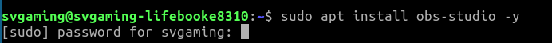

Step 1: Installing OBS studio
To start using OBS studio, you of course have to install it first.
Downloading and installing on Windows:
Go to https://obsproject.com/ and click "Windows" to download the Windows version.
 After the download is complete, run the setup program you just downloaded, and follow the install process.
After the download is complete, run the setup program you just downloaded, and follow the install process. After that, you are done installing! Feel free to move on to the next step.
Downloading and installing on Linux:
Debian-based distros: (Ubuntu, Mint, etc.) Open the terminal and type "sudo apt install obs-studio -y", and type your user password.
 After that, you are done installing! Feel free to move on to the next step.
Step 2: Setting it up
To start setting OBS up, you have to run OBS.
To run it, just double click it.